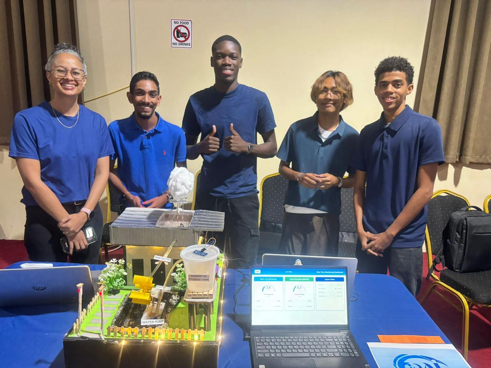

Mijn Projecten
Een overzicht van projecten waar ik aan heb gewerkt — samen met mijn team of zelfstandig.

WAI Systeem
Water Adaptive Intelligence
Het WAI-systeem staat voor Water Adaptive Intelligence en is een slimme assistent voor het beheren van water en energie. In plaats van dat er iemand fysiek langs moet gaan om te controleren of een watertank vol is of dat de machines nog stroom hebben, doet dit systeem dat volledig automatisch. Het maakt gebruik van sensoren die gekoppeld zijn aan kleine computertjes, en die sturen de hele dag door live gegevens door naar het digitale dashboard.
Op dat dashboard zie je direct hoe het ervoor staat met de belangrijkste voorraden. De capaciteit van de energie en de watertanks wordt visueel weergegeven, zodat een beheerder meteen ziet of er actie nodig is. Daarnaast controleert het systeem constant zichzelf en de netwerkverbinding. Mocht er ergens een storing zijn of is er onderhoud nodig aan een pomp of sensor, dan springt er meteen een waarschuwingslampje op rood.
Het adaptieve of intelligente deel betekent dat het systeem niet alleen passief meekijkt, maar ook zelf logische beslissingen kan nemen. Als de stroom bijvoorbeeld bijna opraakt, kan het systeem zelfstandig overschakelen naar een back-up of tijdelijk zware processen uitschakelen om energie te besparen.
Het doel van het hele project is om met techniek te zorgen dat we nooit zonder water of stroom komen te zitten — zonder dat het veel handmatig werk kost. Hieraan heb ik samen met mijn groep gewerkt.